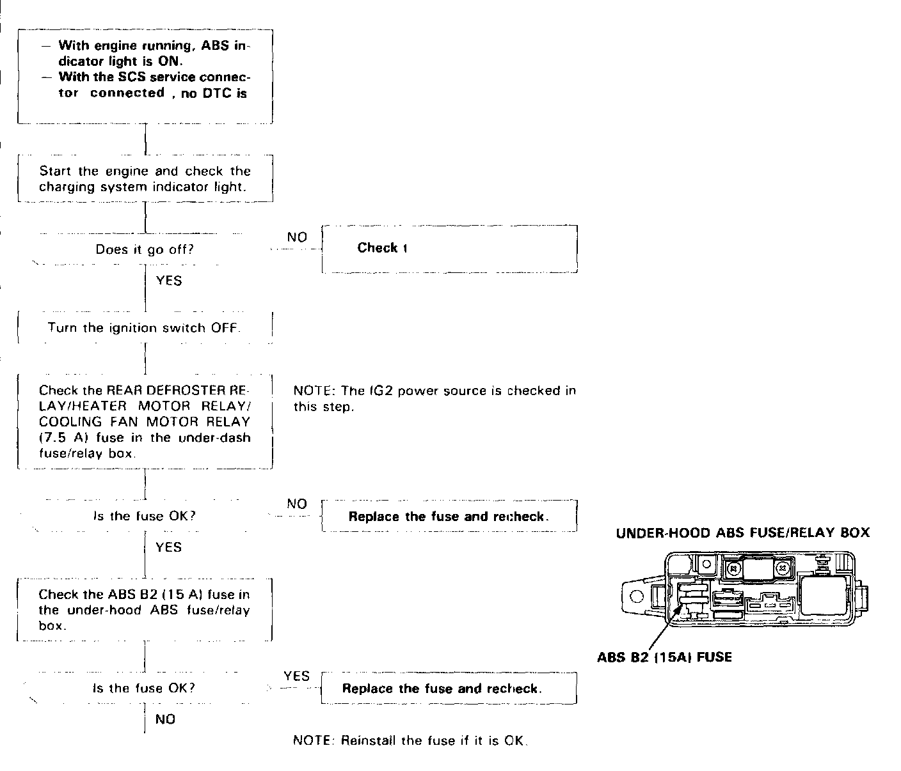
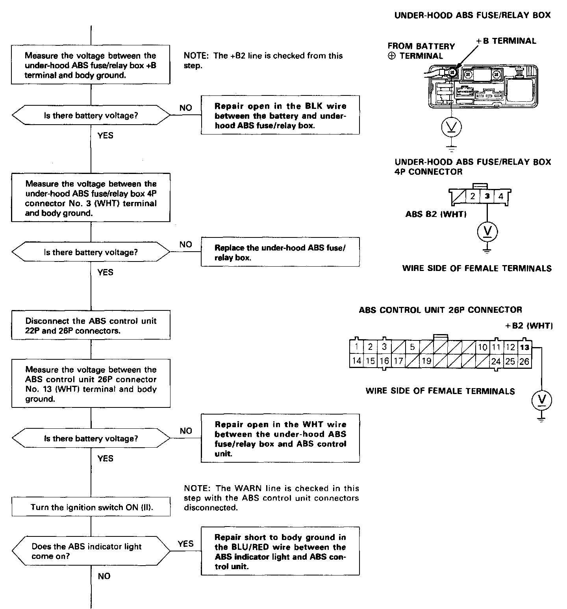
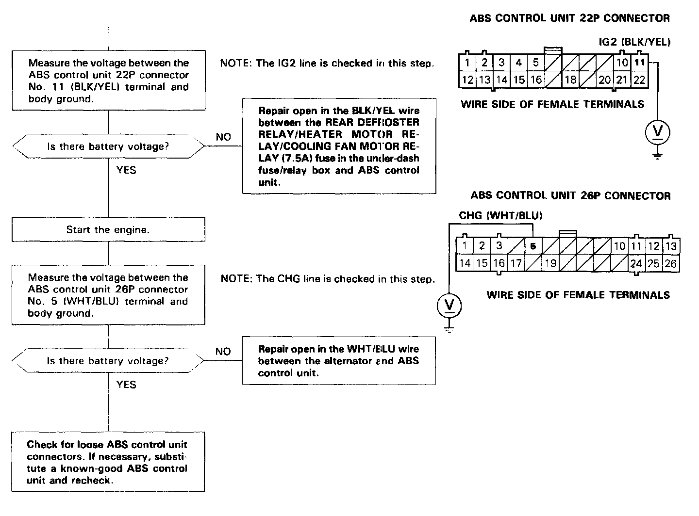

ABS Indicator Does Not Go Off
Part (1 Of 3):

Part (2 Of 3):

Part (3 Of 3):

ABS Indicator Light Does Not Go Off
The ABS indicator light does not go off after the engine is started
When no problem is found during the initial diagnosis, the ABS control unit turns the ABS indicator light drive transistor off to turn the ABS indicator light off.
Possible causes for an ABS indicator light that does not go off, but no Diagnostic Trouble Code (DTC) is indicated:
- Blown REAR DEFROSTER RELAY/HEATER MOTOR RELAY/COOLING FAN MOTOR RELAY (7.5 A) fuse
- Open circuit between the under-dash fuse/relay box and ABS control unit
- Open circuit between the battery and under-hood ABS fuse/relay box
- Blown ABS B2 (15 A) fuse
- Open circuit inside the under-hood ABS fuse/relay box
- Open circuit between the under-hood ABS fuse/relay box and ABS control unit
- Faulty alternator
- Open circuit between the alternator and ABS control unit
- Short to body ground in the WARN circuit between the ABS indicator light and ABS control unit
- Faulty ABS control unit.